Lymphatic System
Lymph Nodes - Structure and Function
Study Notes - Lymphatic System
LYMPHATIC SYSTEM
The lymphatic system consists of:
- Lymphocytes
- Lymphoid tissue + organs
- Lymphatic vessels
LYMPHATIC ORGANS
Primary (Central) Organs
- Production and maturation of lymphocytes
- Incorporation of proteins in cell membrane of lymphocytes → will later become receptors (for T and B lymphocytes to recognise pathogens)
- Naive cells mature here
- They then migrate to secondary (peripheral) lymphatic organs
- 2 primary lymphatic organs
Bone Marrow
- Haematopoiesis
- Maturation of B lymphocytes
Thymus
- Maturation, multiplication and selection of T lymphocytes
Secondary (Peripheral) Organs
Sites where immune cells migrate to and carry out their functions. Can be:
Encapsulated: Covered by a fibrous capsule
- Spleen
- Lymph nodes
Partially encapsulated: Part epithelium, part dense connective tissue
- Tonsils
Not encapsulated: Accumulation of lymphoid tissue near epithelium of organs (in mucosa)
- MALT (mucosa associated lymphoid tissue)
Structure
Parenchyma
- Functional tissue
- Storage of cells
- Lymphocytes (including precursors and effectors)
- Antigen presenting cells (monocytes, macrophages, follicular dendritic cells, dendritic cells)
- Plasma cells
- Granulocytes
- Arrangement of cells may be:
Diffused
- T cells diffusely distributed between stroma (in parenchyma surrounded by stroma)
- Found in:
- Thymus
- Lymph nodes (paracortex)
- Spleen
Nodular (follicular) arrangement:
- B cells form clusters (lymphoid nodules)
- Found in:
- Lymph nodes (cortex)
- Spleen (white pulp)
- Tonsils
- MALT
Primary non-activated follicles (nodules):
- Poppy seed like structure
- All dark
Secondary activated follicles (nodules):
- Mantle zone: Periphery - poppy seed like structure, dark
- Germinal centre due to development of centroblasts to centrocytes
Stroma
- Scaffold like structure that supports the storage of cells in parenchyma
- Reticular fibres
- Reticular cells
- Exception: reticular epithelium in the thymus
CELLS
Epithelial Reticular Cells
- Only in thymus
- Stellate shape
- Ovoid nucleus - high in euchromatin
- Eosinophilic
- Cytokeratin intermediate filaments
- Derived from endoderm / ectoderm
- Type 1: form continuous subcortical layer (processes)
- Type 2: wrap lymphocytes into aggregates (processes)
- Type 3 and 4: contribute to blood thymus barrier (processes) + secrete substances that regulate proliferation and maturation of T lymphocytes
- Type 5: development of self tolerance
- Type 6: form Hassall's corpuscles
Thymus
- 2 lobes
- Larger in children
- Decreases in size by age and is replaced by adipose tissue
- Has only efferent lymphatic vessels (doesn't filter lymph)
STRUCTURE:
Capsule
- Dense irregular connective tissue (type I)
- Septa corticali thymi
- Connective tissue septa (trabeculae) extending from capsule
- Divide parenchyma into pseudolobules
- Contain large blood vessels
- Septa corticali thymi
Cortex
- Peripheral part
- Darker in staining - due to T lymphocytes (diffuse arrangement)
- Parenchyma: developing T lymphocytes (thymocytes) + macrophages
- Internal Stroma: epithelial reticular cells
- Cover blood vessels with their processes →
Medulla
- Central part
- Lighter in staining - more epithelial cells (more cytoplasm)
- Parenchyma: mature T lymphocytes
- Internal stroma: epithelial reticular cells (more)
- Don't fully cover vessels with their processes → no blood thymus barrier (cells have already encountered antigen)
- Hassall's corpuscles: onion like structure
- Eosinophilic
- Increase size with age
- May calcify
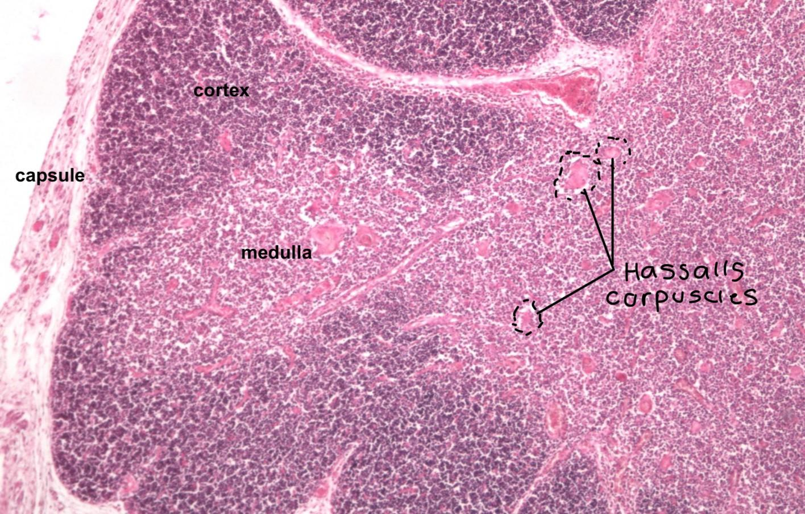
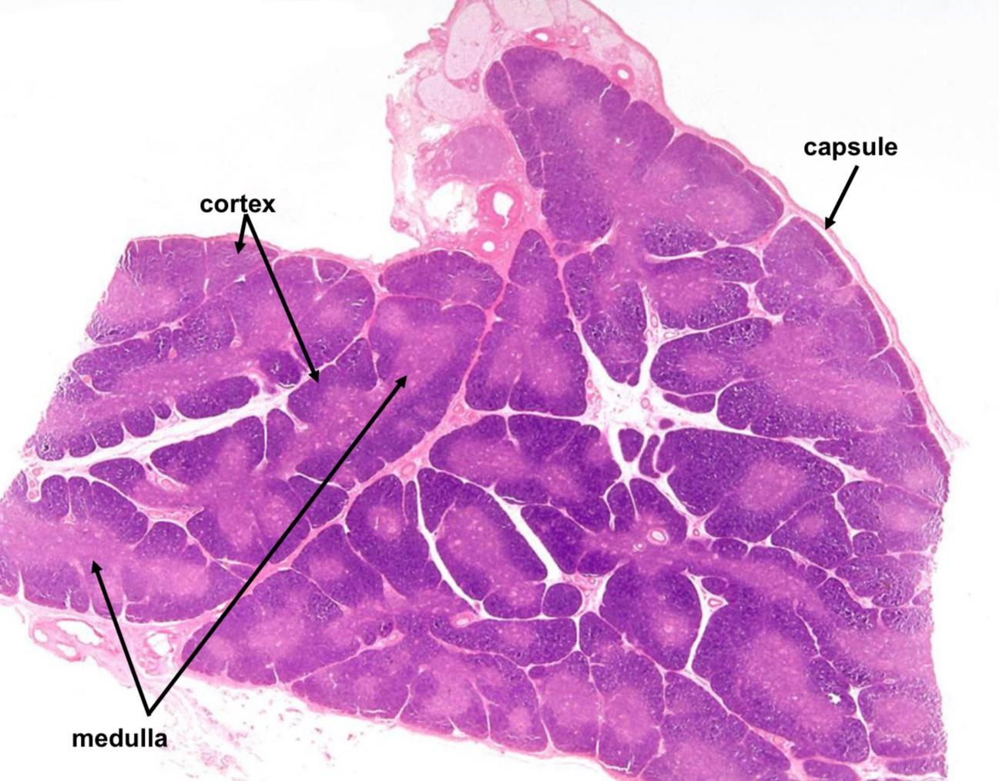
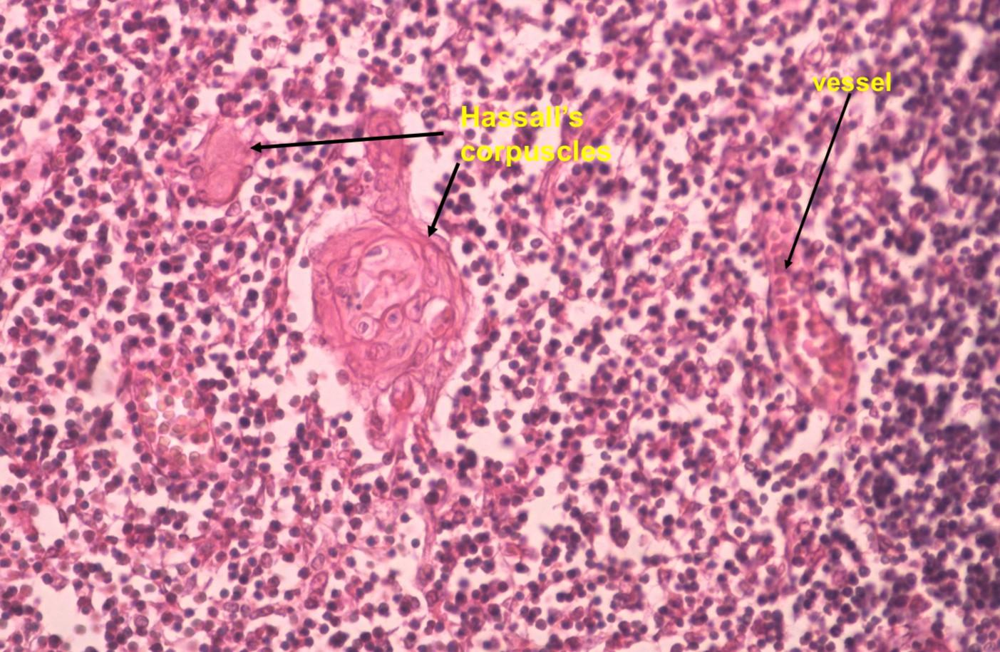
Lymph Node
- Totally encapsulated secondary lymphatic organ
- Ovoid / kidney / bean like shape
- Embedded into the course of the lymphatic vessels
- Purifies lymph from foreign particles before entering blood
- Lymph: enters lymphatic capillaries from interstitial fluid, is filtered by lymph nodes and enters blood through main duct
- Approx 500 lymph nodes present
- Afferent lymphatic vessel: brings lymph to lymph node
- Efferent lymphatic vessel: carries lymph away from lymph node
- Lymph node covered by adipose tissue
STRUCTURE
Capsula Fibrosa
- Note: remember we said lymph nodes are encapsulated completely
- Connective tissue capsule
- Trabeculae extends from it
- Lymphatic sinuses
Internal Stroma:
- Reticular connective tissue
- Structural support
- Compartmentalisation
- Divides parenchyma into cortex, paracortex and medulla
Cortex:
- Located directly under the capsule
- Contains pseudolobules formed by stroma
- Contain lymphoid nodules: accumulation of B cells in follicular arrangement
Paracortex:
- Deeper to cortex
- Layer of sparse lymphocytes - in diffuse arrangement
- No lymphoid nodules
- Contains T lymphocytes
Medulla:
- Inner part of lymph node
- Network of medullary sinuses leading to efferent lymphatic vessel
- Medullary sinuses: for lymph
- Medullary cords: between medullary sinuses, contains T cells, plasma cells, lymphocytes
- Macrophages and APC's found throughout whole lymph node
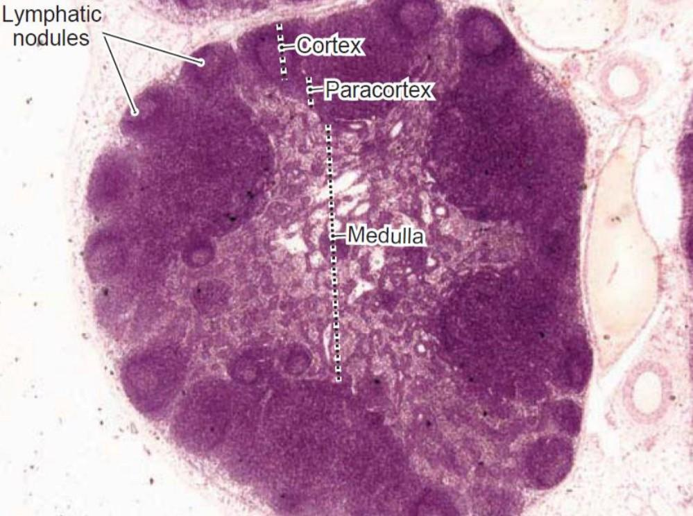
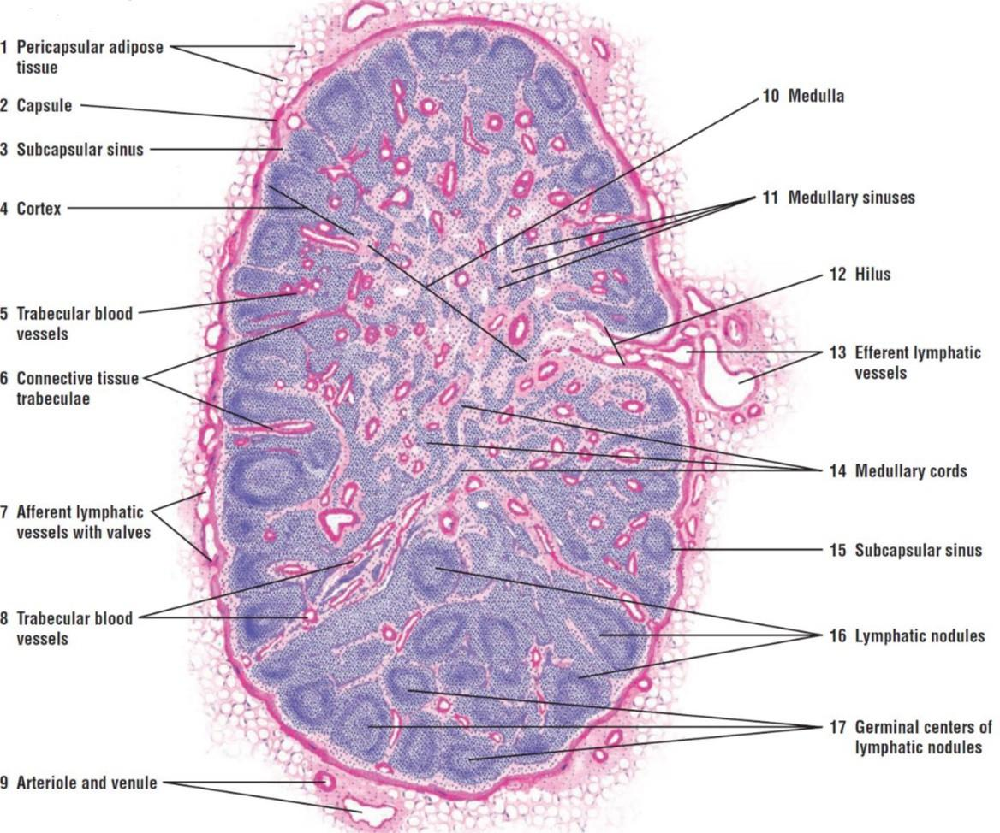

FLOW OF LYMPH:
- Afferent lymphatic vessel - brings lymph to lymph node
- Subcapsular sinus - beneath capsule
- Intermediary sinus
- Medullary sinus
- Efferent lymphatic vessel
Spleen
- Secondary lymphoid organ
- Largest accumulation of lymphatic tissue
- Functions:
- Immune defence
- Blood filtration
- Foetal haematopoiesis
- Encapsulated
STRUCTURE
Tunica Serosa
- Visceral layer of peritoneum (because it's in abdomen)
- Loose collagenous connective tissue + mesothelium
Capsula Fibrosa (coarse stroma)
- Dense collagenous connective tissue capsule
- Splenic trabeculae: extend from capsule
- Trabecular arteries: branches of splenic artery running in the trabeculae
Internal Stroma
- Reticular fibres and cells
Parenchyma
Note: not divided into cortex, medulla etc… and no lobules
White Pulp:
- Malpighian bodies
- Lymphatic nodules embedded in red pulp
- Aggregation of WBC (mainly B cells)
- Periarteriolar lymphoid sheath (PALS)
- Around central arterioles
- T cells
- Typical feature of spleen
- Marginal zone
- Around follicles
- More macrophages and dendritic cells at the expense of lymphocytes
- Perifollicular zone
- Expansions around follicle, blood enters into it
Red Pulp:
- Makes up majority of spleen
- Splenic cords of Billroth
- Reticular cells
- Immune cells: WBC + RBC
- Site that blood is emptied into = open circulation
- Older RBC cannot pass from cords to sinusoids due to their degenerating elasticity
- Remain in spleen and taken up by macrophages
- Venous sinusoids
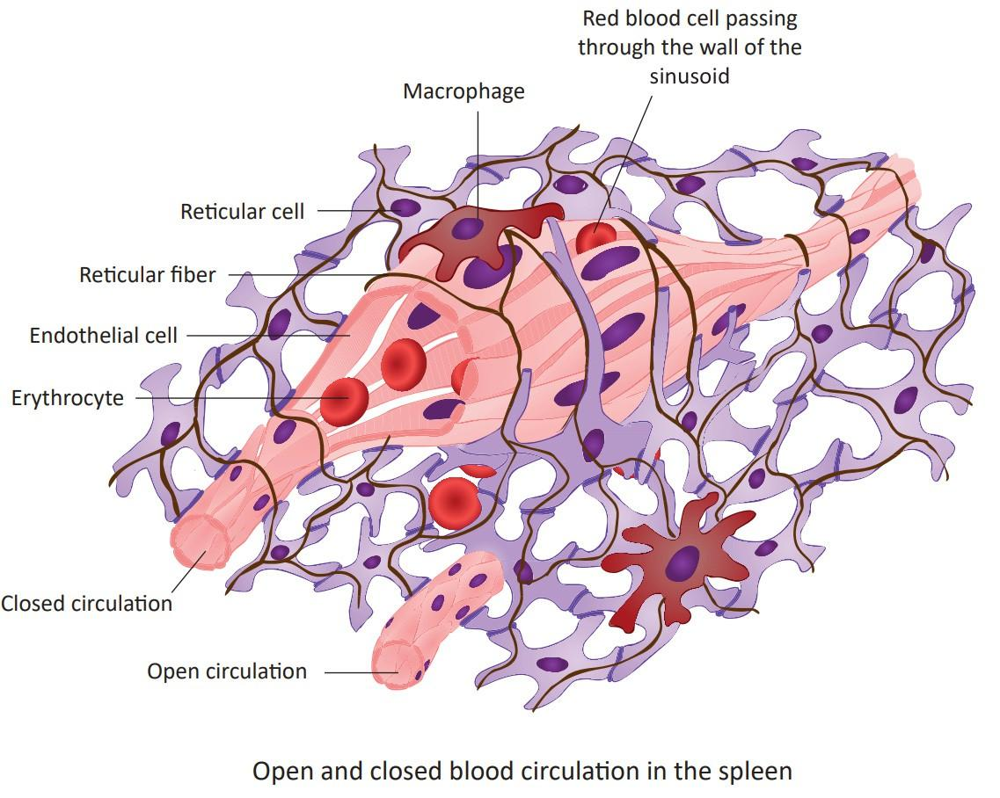 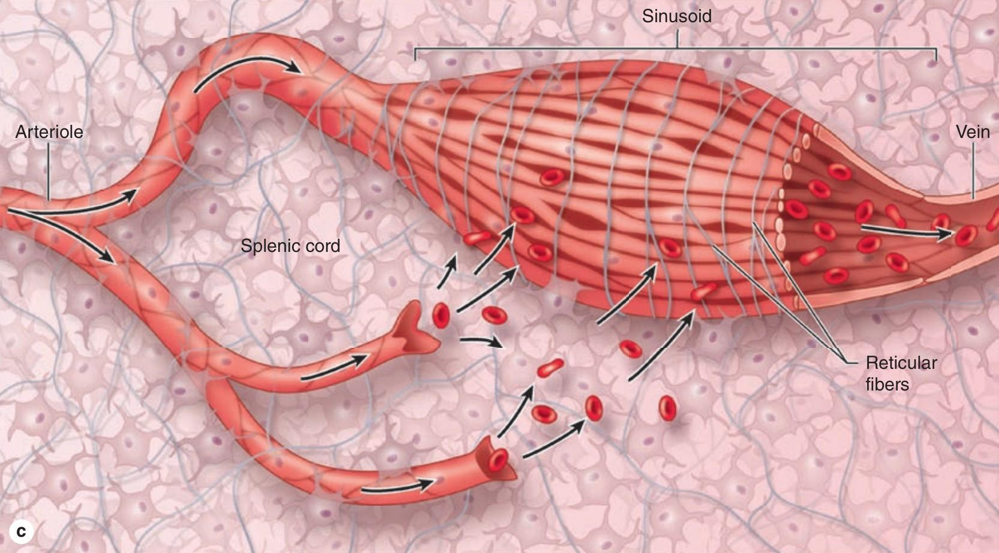
- Dilated capillaries with wide sinusoids
- Enable the exchange between blood and pulp
- Endothelium: stave cells
Blood Flow in Spleen
- Splenic arteries
- Trabecular arteries
- Central arterioles
- Covered by PALS
- Give off follicular arterioles (send plasma to follicular)
- Penicillar arterioles
- Sheathed capillaries (sheathed by macrophages)
- Open circulation: empties into splenic cord (majority)
- Blood from open circulation passes through the openings of the sinusoids
- Closed circulation: passes to sinusoids
- Open circulation: empties into splenic cord (majority)
- Sheathed capillaries (sheathed by macrophages)
- Penicillar arterioles
- Central arterioles
- Trabecular arteries
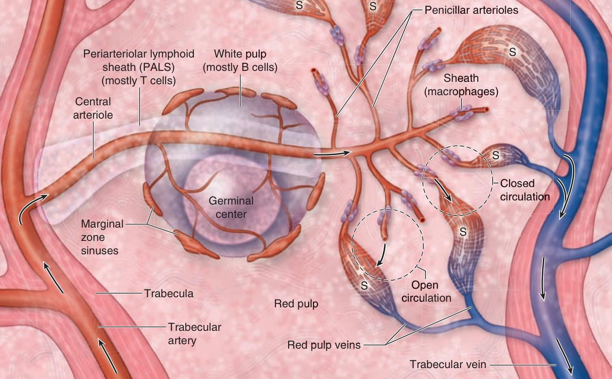
Mucosa Associated Lymphoid Tissue (MALT)
- Organised lymphoid tissue in lamina propria of hollow organs
- Peripheral non-encapsulated lymphoid tissue
Structure
- Lymphoid follicles
- B cells
- Interfollicular areas
- T cells
Based on Location
- GALT - gut
- BALT - bronchi
- NALT - nasal mucosa
- CALT - conjunctiva mucosa
Types:
- Independent macroscopic structure - eg tonsil
- Thin layer in mucosa of hollow organs - eg appendix
Palatine Tonsils
- One of the 4 types of tonsils
- Lingual tonsil
- Palatine tonsils (paired)
- Tubal tonsils (paired)
- Pharyngeal
- Make up Waldeyer's ring: entrance to the respiratory and GIT tract
- Secondary lymphoid organs
- Partially encapsulated
STRUCTURE
Capsula Fibrosa
- Connective tissue capsule with septa
- Only covers basal surface (in contact with skeletal muscle), doesn't cover surface
Surface Epithelium
- Luminal surface
- Stratified squamous non keratinised / pseudo stratified columnar with goblet cells and cilia
- Crypts
- Deep grooves in epithelium
- Colonies of microorganisms + cell debris
Stroma
- Reticular fibres + cells
Lymphoid Nodules
- Primary and secondary lymphoid nodules
- T zone between them
Vermiform Appendix
- Mucosa
- Epithelium
- Lamina propria
- Lymphoid follicles
- Lamina muscularis mucosae
- Submucosa
- Lamina muscularis externa
- Serosa
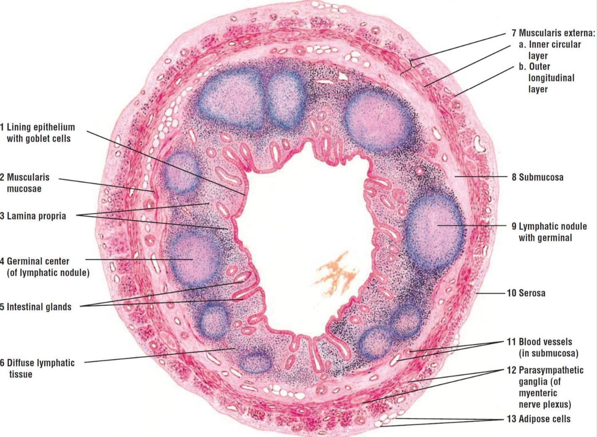
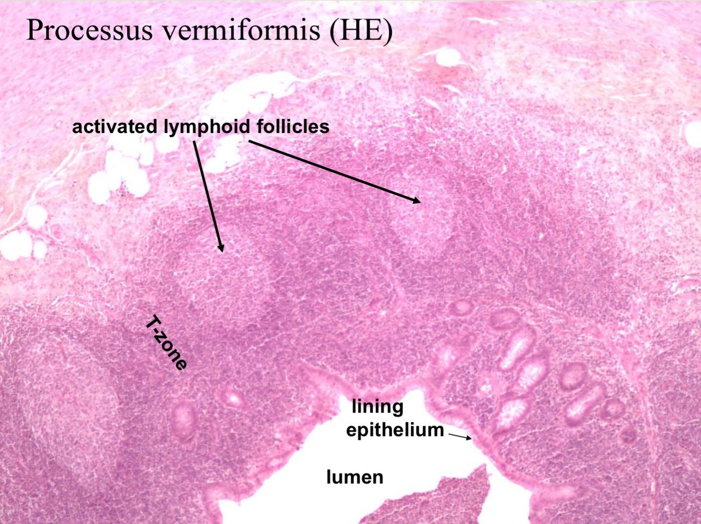
- All same as caecum
Summary:
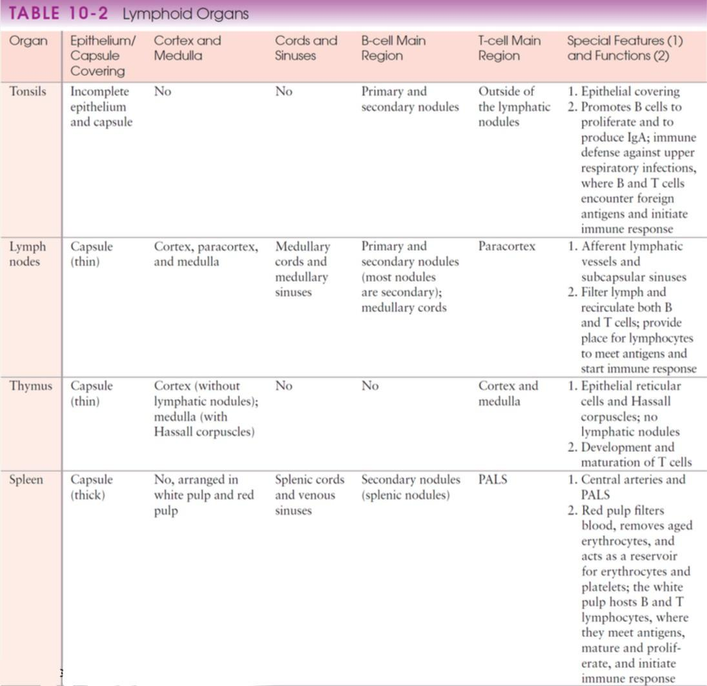
Clinical Correlations
- Cancer Metastasis: Lymph nodes serve as barriers against cancer cell spread and are important diagnostic markers
- Immune Response: Lymph nodes become swollen during infections as they filter pathogens and activate immune responses
- Age-related Changes: Thymus involutes with age, affecting T-cell production
- Splenomegaly: Enlarged spleen may indicate various pathological conditions
- MALT Lymphomas: Can develop in mucosa-associated lymphoid tissue
Study Tips
- Understand the distinction between primary and secondary lymphatic organs
- Remember regional specialization: B cells in cortex/follicles, T cells in paracortex/PALS
- Learn the unique features of each organ (Hassall's corpuscles in thymus, PALS in spleen)
- Practice identifying different arrangements: diffuse vs. nodular
- Connect structure to function in immune responses
- Understand lymph flow patterns and blood circulation in spleen
- Correlate encapsulation status with organ function and location
Key Distinctions to Remember
- Encapsulation: Complete (lymph nodes, spleen), partial (tonsils), or absent (MALT)
- Cell arrangements: Diffuse (T-cell areas) vs. nodular (B-cell areas)
- Unique structures: Blood-thymus barrier, Hassall's corpuscles, PALS, splenic cords
- Circulation patterns: Lymph flow in nodes, open/closed circulation in spleen
- Age changes: Thymic involution, increasing Hassall's corpuscles